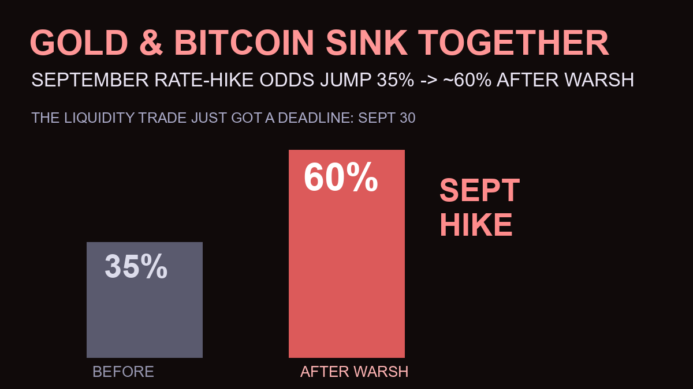

September Rate-Hike Odds Jump to 60% — Gold and Bitcoin Sink Together After Warsh

One speech repriced the entire fall. Fed Chair Kevin Warsh’s hawkish Jackson Hole keynote pushed the market’s implied odds of a September 30 rate hike from 35.4% to roughly 55–60% — and the reaction hit both “alternative” assets at once: gold sank back toward $4,500 and Bitcoin slid to ~$77,700 as the liquidity trade suddenly acquired a deadline.
The Numbers: How Fast the Repricing Was
- September hike odds: 35.4% → ~55.5% overnight (CME FedWatch, per The Guardian); Morningstar pegs it “nearly 60%”
- Bitcoin: slipped to ~$77,700 (-3.5%), erasing the week’s breakout momentum
- Gold: pulled back from near-record $4,700 levels toward $4,500–$4,600 — the metal’s first real test of this rally
- 30-year yield: held near 5.19% — the 2007-era level that started this whole Treasury debate (TradingView/Benzinga)
- December trail: cumulative hike odds above 70% if the September move lands
Why Gold AND Bitcoin Fell Together — Again
This is the pattern we flagged in the gold-rally breakdown: both assets were riding the same liquidity trade. Rate-hike expectations attack that trade from the funding side — cash starts paying real returns, the opportunity cost of holding zero-yield assets jumps, and leveraged positions unwind first. Warsh’s “discipline, not decision” framework gave markets permission to price discipline.
What’s notable is gold’s reaction size. A metal rallying on central-bank buying and debt anxiety shouldn’t care much about one Fed meeting — but at near-record prices, positioning was stretched. When everyone owns the hedge, the hedge sells off first.
The Mechanics: What a Rate Hike Actually Does to Bitcoin, Gold and Stocks
For readers who want the why behind the scenarios — three transmission channels, none mysterious:
- Bitcoin: hikes raise cash yields (T-bills pay real returns again), so the opportunity cost of holding a non-yielding volatile asset jumps. Leveraged longs unwind first — which is why crypto falls harder than the macro change alone justifies. The 2022–23 pattern: sell into hikes, rally after delivery.
- Gold: the same non-yield problem plus a dollar effect — hikes strengthen the USD, and gold is dollar-priced, so global buyers face a double headwind. Central-bank buying is the counterweight that kept this rally alive at all.
- Stocks: higher rates compress valuations (future earnings are worth less today), hitting growth/tech hardest — the same “long-duration asset” math that punishes crypto also punishes unprofitable tech.
The inverse matters too: when a hike is delivered, uncertainty collapses and the “buy the hike” relief rally has historically followed — because the market had already priced the pain and now gets the clarity.
The Scenarios Into September 30
Hike lands (~60% priced): expect one more leg down for Bitcoin toward the $72,000–$74,000 zone and gold testing $4,400 support — followed, historically, by relief rallies once the hike is actually delivered (“buy the hike” was the 2022–23 pattern). Hold surprise (~40%): if Warsh’s own data-dependence wins — the next PCE print softens — the odds unwind violently, and both assets snap back fast; the shorts crowding this trade are the squeeze fuel. The wildcard: Warsh’s “quieter Fed” doctrine means fewer explicit signals, which raises volatility around every data print between now and the meeting.
Frequently Asked Questions
What are the odds of a Fed rate hike in September 2026?
Around 55–60% as of August 29 — up from 35.4% before Warsh’s Jackson Hole keynote, per CME FedWatch data (Guardian) and Morningstar’s post-speech analysis. Cumulative odds of a hike by December exceed 70%.
Why did gold fall after the Warsh speech?
Gold’s record rally was partly a liquidity trade. Rising hike odds push real yields and the dollar up — raising the opportunity cost of holding zero-yield gold — so stretched long positioning unwound, pulling prices from near-record $4,700 levels toward $4,500–$4,600.
Will Bitcoin recover if the Fed hikes?
Historically, crypto sold off into hikes and rebounded after delivery — the 2022–23 pattern. If the September hike lands as priced, watch the $72,000–$74,000 support zone for Bitcoin’s relief-rally setup. A surprise hold would likely trigger a faster snap-back given crowded short positioning.
Sources
- The Guardian — CME FedWatch: Sept hike 55.5%, up from 35.4%
- Morningstar — “nearly 60%” September odds analysis
- TradingView/Benzinga — gold+bitcoin sink, 30Y at 5.19%
- Seeking Alpha — 55% odds, what Warsh didn’t say
- Yahoo Finance — hold still favored, burden of proof analysis